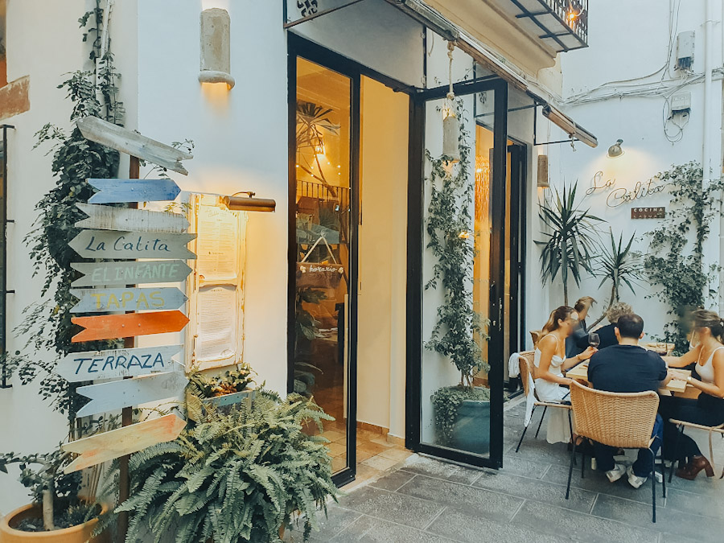
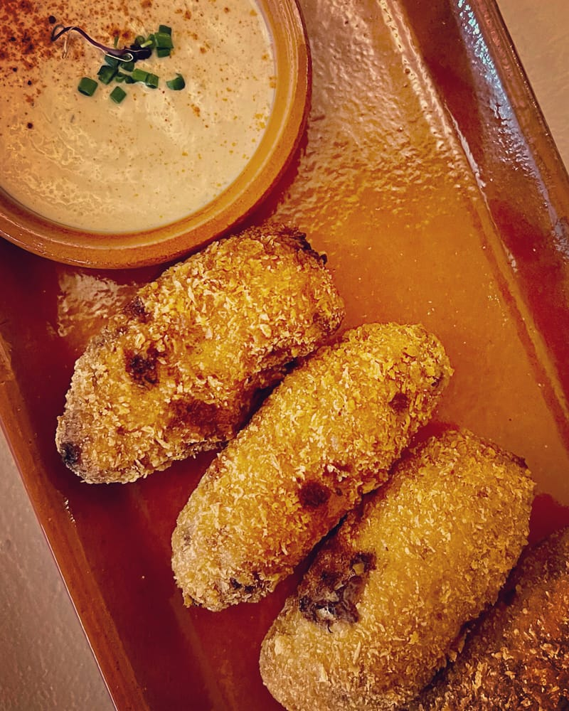
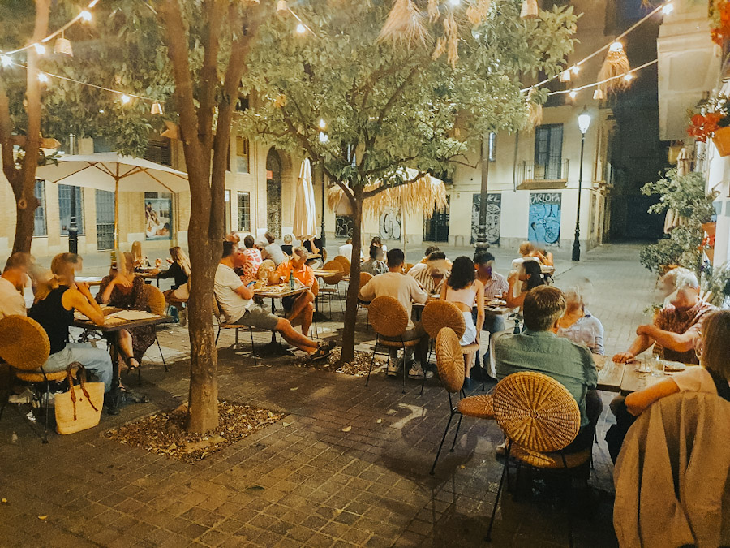

Croquetas de pato
Pato confitado y setas en uno de los bocados de la casa.
Tapinería, 16 · Ciutat Vella
Cocina mediterránea, una mesa para compartir y ese momento en el que decides quedarte un poco más.

01 / El espíritu de La Calita
Una pausa mediterránea en el corazón de Ciutat Vella.
En la calle de la Tapinería, junto a la Plaza del Miracle del Mocadoret, La Calita reúne cocina casual y una terraza con encanto entre las calles del casco antiguo.
Una carta que combina el tapeo con otros acentos: del pato confitado al pistacho, del pulpo a la llama a las especias del Mediterráneo oriental. Elige varios platos. La mesa es para compartir.
Empieza por un bocado ↘02 / Abre el apetito
Clásicos que apetecen.
Combinaciones que sorprenden.

Pato confitado y setas en uno de los bocados de la casa.
La cremosidad de la burrata se encuentra con tomate valenciano y pesto de pistacho.
Pulpo terminado al fuego sobre una base de boniato.

04 / La terraza
Entre plantas, mesas de madera y luces al caer la tarde, un rincón para hacer una pausa en el centro de Valencia.
Ven con quien te apetezca. Lo demás empieza al sentarse.
Haz sitio para un buen plan ↘Nos vemos en La Calita
El siguiente plan empieza con una mesa en Ciutat Vella.
Reserva tu mesa ↗Consulta fechas, turnos y disponibilidad en CoverManager.
05 / Aquí nos encuentras
Callejea por Ciutat Vella y encuentra tu rincón en Tapinería.
Cómo llegar ↗Plaza del Miracle del Mocadoret